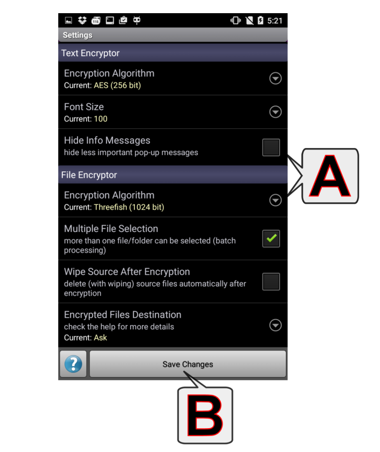

設定
（輕觸某個字母或向下捲動，即可檢視更多主題）

A - 可用的設定
- 密碼保險箱
- 演算法：密碼保險箱的加密演算法。
- 密碼清單字型大小：密碼（項）清單區中文字的大小（密碼名和密碼的字型大小）。
- 自動備份資料夾：如果啟用，每次密碼保險箱內容發生變化，密碼保險箱資料會匯出（PWV_AutoBackup.pwv文件）到所選的資料夾。它可以備份到雲端存放裝置。
- 鎖定螢幕：當應用程式進入幕後執行（當應用程式被「最小化」）時鎖定密碼保險箱的螢幕。
- 文字加密
- 演算法：文字加密的加密演算法。
- 字號：未加密/加密文字區中文字的大小。
- 隱藏資訊訊息：隱藏不重要的彈出訊息（例如： 訊息已被複製到...）。
- 最終編碼：輸出文字編碼。可用編碼：Base64 (PTE default), Base32 (RFC 4648), 僅數字(0-9)
- 新增空格：編碼文字每 N 個字元後。
- 鎖定螢幕：當應用程式進入幕後執行（當應用程式被「最小化」）。
- 檔案加密
- 演算法：檔案加密的加密演算法。
- 選中多個檔案：（只限 Pro 版） - 啟用/停用檔案多選模式（批次處理）。
- 加密後抹除原始檔：加密後自動刪除（並抹除）原始檔。
- 解密後刪除.enc檔案：解密後自動刪除原始檔案（加密的.enc檔案）。
- 加密檔案目的路徑：
與原始檔相同：將輸出檔案存放於輸入檔案所在的同一目錄。
預定義位置：使用檔案加密應用程式中的「自訂目錄」按鈕（位於左上角 - ）來設定位置（設定當前目錄為... → 加密檔案目錄）。
詢問：應用程式每次加密之前都會向您詢問輸出檔案的位置。
- 解密檔案目的路徑：設定方式與上述「加密檔案目的路徑」相同。
- 顯示取代 .enc 檔案的警告：當指定 .enc 檔名已存在時顯示「繼續/取消」對話方塊。
- 縮圖大小：設定圖像縮圖大小或停用縮圖。
- 鎖定螢幕：當應用程式進入幕後執行（當應用程式被「最小化」）時鎖定檔案加密應用程式的螢幕；必須設定工作階段密碼。
- 通用設定
- 匯入/匯出路徑：應用程式的匯入/匯出目錄。
- 應用程式啟動保護：在每次啟動應用程式時要求身份驗證。此密碼僅用於啟動身份驗證。它不影響加密功能或相關的螢幕鎖定功能。
- 防止截圖：安全處理視窗內容，防止它出現在截圖中。此選項可在Android 4.4或更高版本中使用。需要重新開機應用程式。
- 允許使用 Unicode 密碼：預設情況下只有值為 32-126 的 ASCII 字元允許作為密碼（=> 相容性，幾乎每個裝置/系統都有足夠打出所有這些字元的鍵盤）。如果「允許使用 Unicode 密碼」，您鍵盤上可以打出的每個字元都可以作為密碼。
- 禁用本機程式碼演算法：僅使用平台獨立版本的程式碼（僅當在本裝置上使用本機程式碼會引發錯誤的情況下使用）。
- 顯示子應用程式結束對話方塊：確認返回主功能表（只在點按「返回」按鈕時出現此提示，直接按「主功能表」按鈕將無此提示，直接返回）。